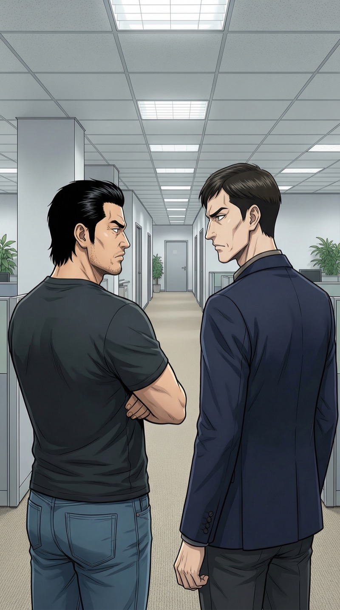
上辈子，这个人叫陆远。
他的公司在2023年融了五轮，估值比我高十倍。
但2026年……他也死了。
就在三个月前。新闻说是心脏骤停。我还给他发过一条"R.I.P."。
现在他活生生站在我面前。2014年。穿着我在2024年才在他朋友圈见过的那件深蓝色休闲西装。
他看着我，嘴角挂着那种我很熟悉的微笑——
计算过的。每一毫米弧度都是经过精密计算的。
上辈子开会，他对投资人笑是这个弧度。对竞争对手笑，也是这个弧度。
唯一的区别是眼睛里的温度。
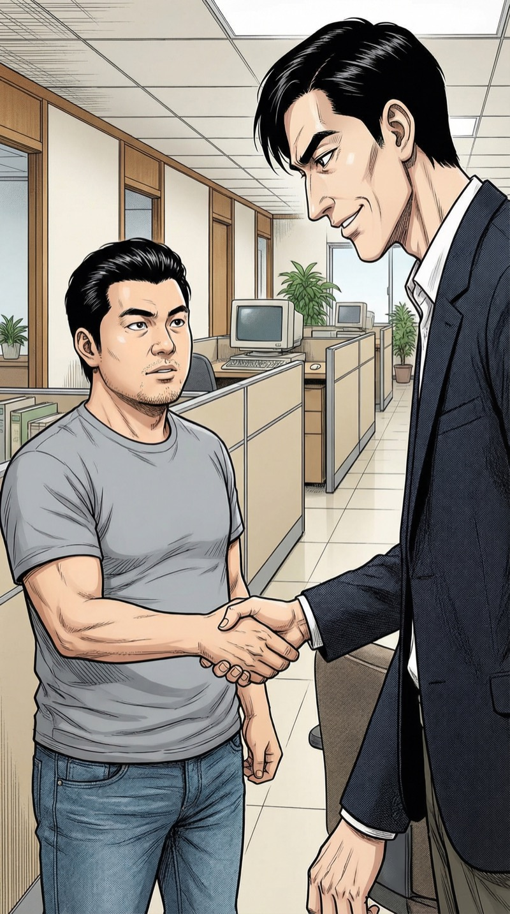
"你好，陆远。刚从中关村那边过来，听说这家公司在做语音识别，就来看看。"
他主动伸出手。
我握住。他的手干燥、有力，跟上辈子一模一样。
"朱江。也是来聊合作的。"
我们像两个第一次见面的陌生人一样寒暄着。但我的掌心在出汗。
客户还没到。前台让我们在等候区坐着。
"你也是做数据服务的？"
"嗯，数据标注。你呢？"
"差不多。不过我更看好上游——数据采集和清洗。"
2014年说"数据清洗"的人，要么是从未来回来的，要么是真正的天才。这年头大部分人连"大数据"三个字都刚学会。
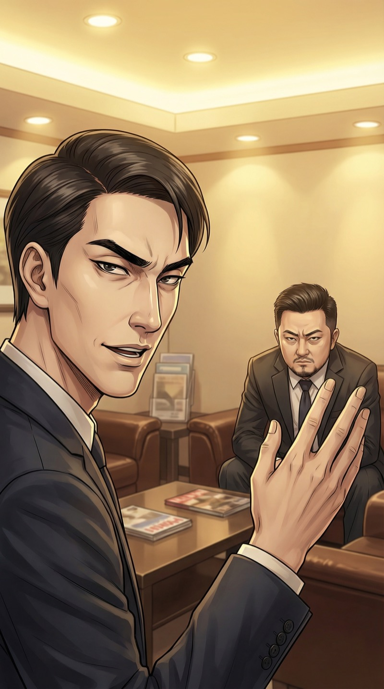
他端着纸杯咖啡，像聊天气一样说了一句：
"未来语音交互会比触屏更重要。触屏只是过渡形态。"
我心里"咯噔"一下。
2014年。iPhone 5s 刚出来，全世界都在为触屏疯狂。说语音交互比触屏重要？
这不是判断力的问题。这是知道答案才会有的笃定。
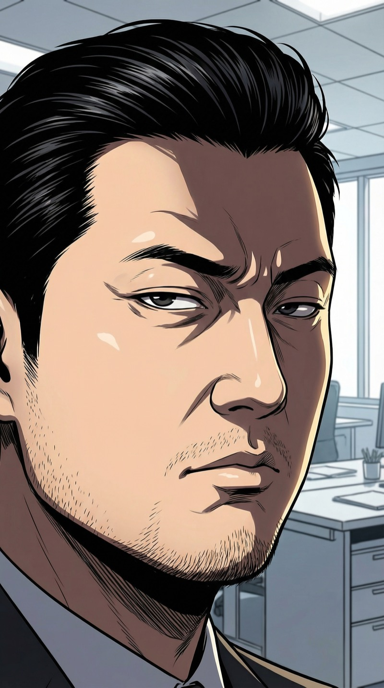
"哦？你对AI很感兴趣？"
我尽量让语气听起来像一个普通创业者的好奇。
"很感兴趣。"他微微偏头，"……一直都是。"
"一直都是"。
你确定？2014年的陆远，上辈子这个时候还在投行搬砖呢。
⟐ 决 策 点 3 ⟐
直接试探——暗示一句只有未来才知道的事，观察他的反应。风险大，但我需要快速确认。
不动声色——先拿下客户再说。信息是武器，不能轻易暴露。
好奇心是我的底层驱动。面对不确定性，我永远选择主动出击。但方式是巧妙的，不是莽撞的——我不会直接问"你是不是穿越的"，我会设一个陷阱。
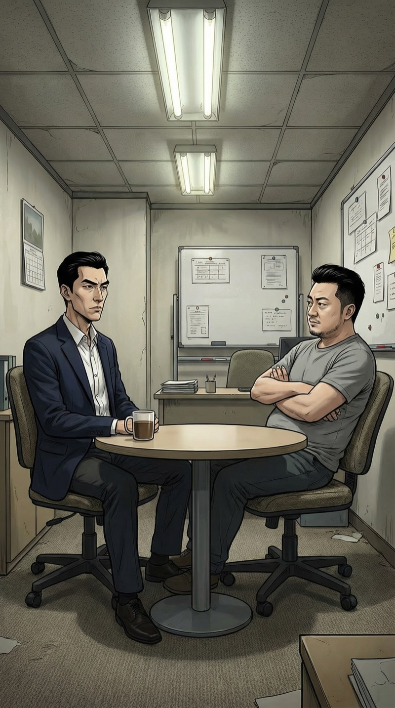
我决定下饵。
表面上在闲聊投资机会，我看似随意地说——
"2014年是好年份，适合下注。就像……2017年底的比特币。"
2014年，比特币价格不到400美元，币圈还是极客的玩具。用"2017年底"来类比投资时机，这个时间点的精确度，只有知道未来的人才能理解。
我说完这句话，保持着最随意的表情，眼角余光锁住他。
一个正常的2014年中国人，听到"比特币"这三个字的反应应该是——"那是什么？"或者"传销吧？"
如果他跟我一样来自未来，他的反应会完全不同。
他端着咖啡的手——
顿了一下。
就那么零点几秒。纸杯在嘴唇前停了一拍。
一个不知道比特币2017年暴涨的人，不会有这个反应。这个"顿"，是因为他在计算——我知道多少。
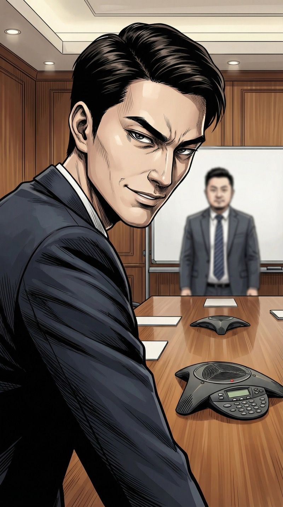
然后他笑了。
"有意思。"
他放下咖啡杯，看着我——
"不过我觉得2014年最值得下注的，是短视频。"
2014年。短视频。
快手刚刚转型，抖音要到2016年才诞生。这个判断在2014年几乎不可能做出。
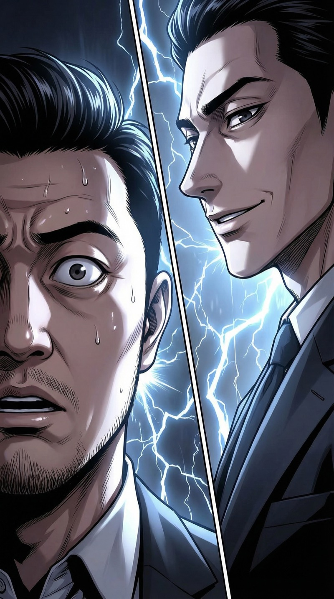
我们对视。
空气凝固了三秒。
我知道了。他知道了。我们都知道对方知道了。
但谁都没有说破。
这一刻，我们不再是两个初创公司的创始人在等客户。
我们是两个穿越者，在2014年的小会议室里，完成了第一次无声的确认。
谍战片的荒谬感，在我脑子里炸开。
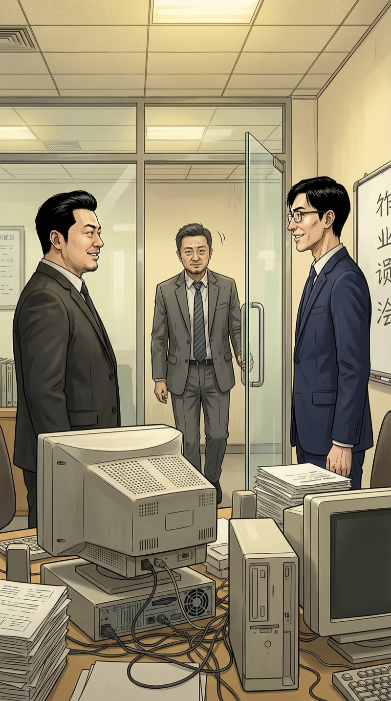
客户到了。语音识别公司的CTO，姓周，四十多岁，啤酒肚，头发稀疏。
我们各自收起穿越者的面具，变回2014年最正常的创业者。
好的。先打这一仗。
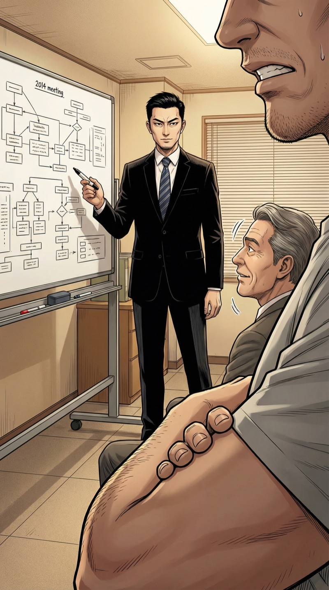
陆远先讲。
他的方案——精准得令人发指。数据采集、清洗、标注、质检，四个环节环环相扣，每一步都有具体方法论。
这不是2014年一个刚入行的人能做出来的方案。这是我上辈子2020年才见过的行业最佳实践。
周CTO不停点头。
完了。
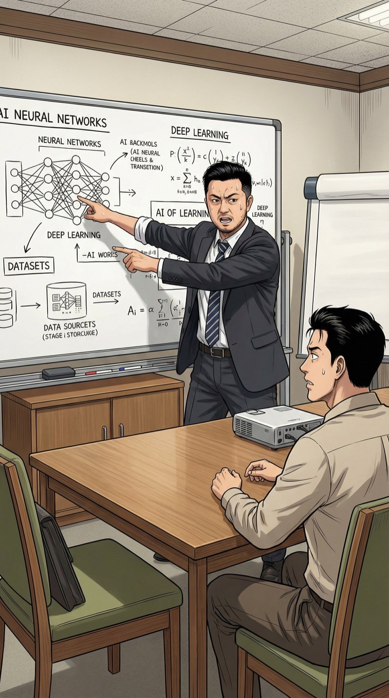
轮到我。
我的方案偏技术流——讲AI训练数据的底层逻辑，讲模型对数据质量的敏感度，讲标注一致性的数学原理。
周CTO听得很认真，但我能看出来——
他是产品经理出身，听不太懂这些技术细节。他要的是一个能落地的方案，不是一堂机器学习课。
周CTO开始跟陆远讨论执行细节。两个人越聊越投机。
我坐在对面，看着这一幕。
桌子底下，我的拳头攥紧了。
他不只是知道未来。他准备得比我更充分。他的方案比我的更细致、更专业、报价更低。
我的优势是对AI技术的深度理解——黑客基因。他的优势是对商业格局的全面掌控。
但这个客户，要的是后者。
⟐ 决 策 点 4 ⟐
降价硬抢——用更低报价打价格战。短期能拿下，但根基受损。
换赛道——放弃这个客户，去攻一个陆远还没注意到的市场。
我不是做价格战的人。数据标注只是敲门砖，我要建的是AI娱乐帝国。黑客思维的核心不是正面硬刚，是找到系统漏洞——找到对手没看到的入口。
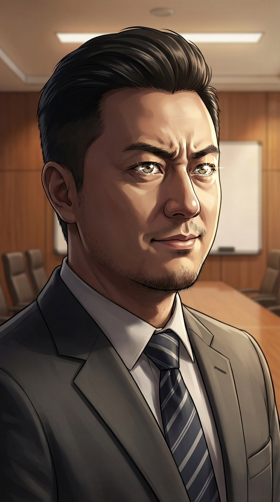
我没有降价。
散会的时候，我甚至跟周CTO说："陆总的方案确实不错，你们可以先合作试试。"
陆远看了我一眼。那个眼神里有一丝……意外。
你以为我会跟你抢？
不好意思，我要去的地方，你还没看到。
走出大楼，下午的阳光刺眼得有点假。
2014年的中关村，到处是"互联网+"的标语和咖啡馆里吹牛的创业者。
上辈子我在这条路上走了十二年，从数据标注走到了AI内容生成。中间踩了无数坑，错过了无数风口。
这一次，我可以直接跳到终点。
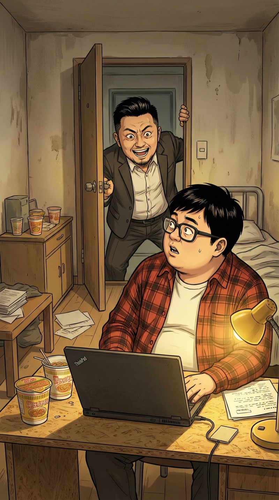
推门进屋。老马正在啃馒头看代码。
"老马！"
他被我吓了一跳，馒头差点掉键盘上。
"客户签了？！"
"没签。客户被人抢了。"
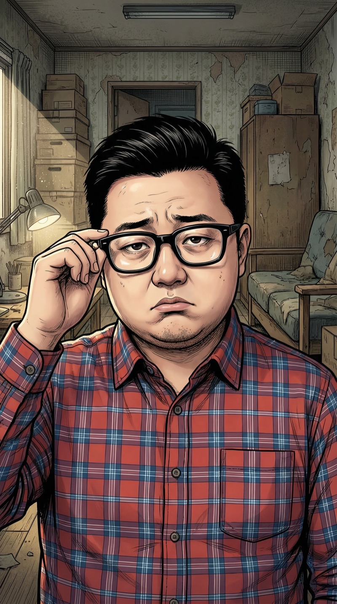
老马的脸肉眼可见地垮了。
"第一个客户……就丢了？"
他推了推眼镜，露出那种"我就知道会这样"的表情。
"我说什么来着，我说什么来着——"
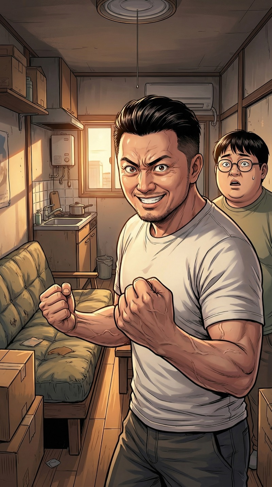
"老马！我改主意了！"
"……啊？"
"数据标注只是敲门砖。我们要做的是——短视频推荐算法。"
我两只眼睛都在放光。
"……短视频？2014年谁看短视频？"
"三年后所有人都看。"
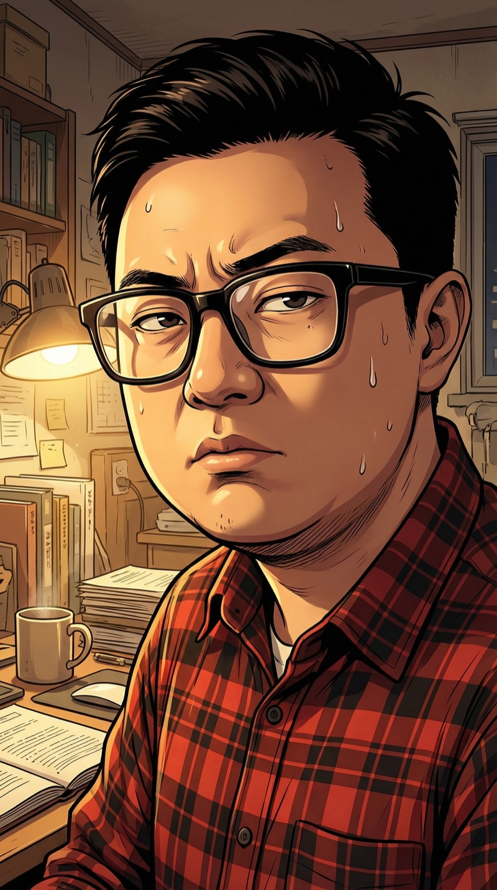
老马看我的眼神——
又来了。上次他也是这个眼神。我管它叫"传销确认眼神"。
"你上次说数据标注值千亿。"
"对啊。"
"结果第一个客户就被人抢了。"
"……"
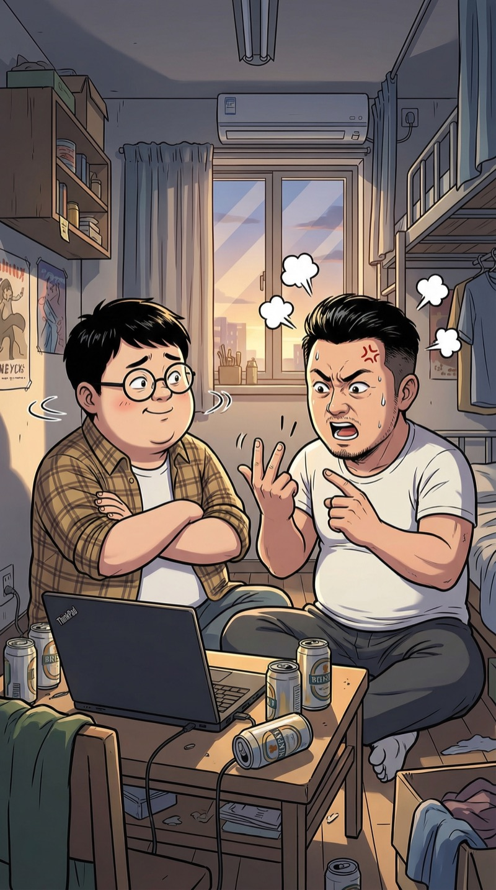
"那不一样？哪里不一样？"
老马掰着手指头算："第一，你说数据标注千亿市场——客户被抢了；第二，你现在说短视频——2014年短视频公司死了一百家了——"
"老马你听我说——"
"第三，你说三年后所有人看短视频，你是开了天眼还是算过命？"
说实话，老马的逻辑没毛病。
如果我不是穿越者，听到一个人说"三年后所有人看短视频"，我也觉得他是传销。
"这次不一样。"
"上次你也说的这句话。"
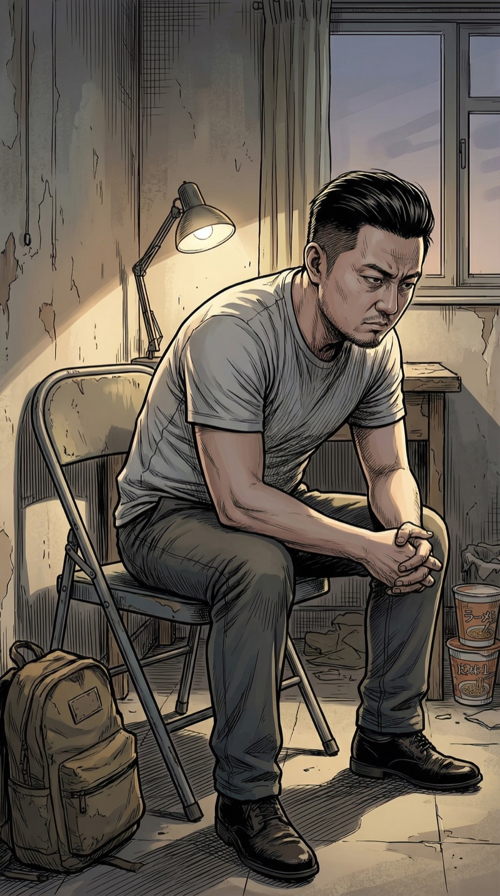
我坐下来，不再亢奋。
"老马，今天抢我客户的那个人……他比我预想的强。很强。"
老马看着我的表情，安静了。
"数据标注这条路，他已经提前布好局了。如果我硬拼，只会输。但短视频推荐算法——这条路他还没走。"
"……你怎么知道他没走？"
"因为他赌的是短视频内容。我赌的是底层算法。同一个赛道，不同的切入点。"
因为上辈子他就是走内容路线的。算法这块，他始终没碰。这是我的领地。
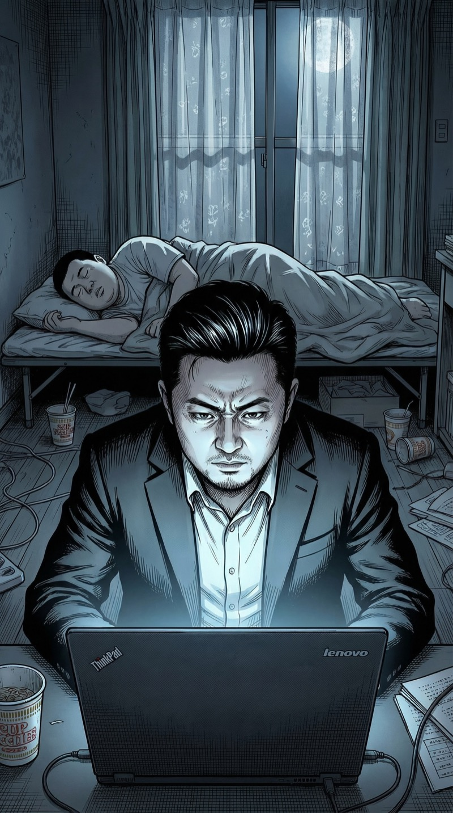
凌晨三点。老马早就睡了，打呼声震天响。
我睡不着。翻来覆去想的都是陆远。
他是什么时候重生的？他记得多少？他的计划是什么？
我悄悄打开ThinkPad，开始查他的底细。
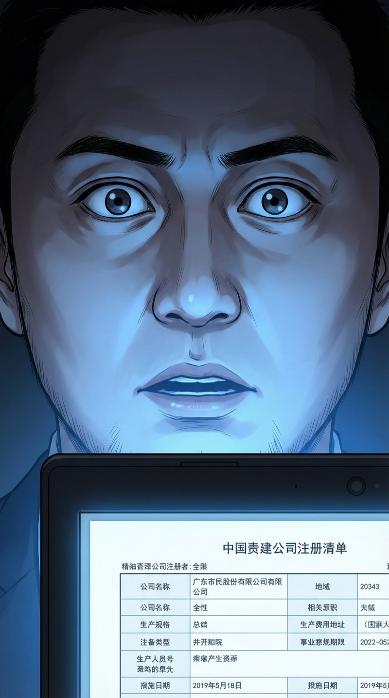
工商信息查询。陆远，男，1985年生。
2014年1月8日，注册了一家公司——
业务范围赫然写着："人工智能内容生成"。
2014年1月。那个时候deep learning的论文还在学术圈里传阅，AlphaGo要到2016年才出圈。一个正常人不可能在2014年1月就注册"人工智能内容生成"公司。
我后背出了一层冷汗。
2014年1月8日。我是2月14日"醒来"的。
他比我至少早了一个月。
多一个月意味着什么？意味着他有更多时间布局、更多时间筹备、更多时间找人。
而我，到今天连第一个客户都没签下来。
我继续往下翻。股东信息。
陆远，持股60%。正常。
另一个名字——
我的手指停在屏幕上。
这个名字。
上辈子，这个人在2019年就"消失"了。所有公开信息里都找不到他。有人说他出国了，有人说他被抓了，有人说……
总之，在我记忆中的2020到2026年，这个人就像从地球上蒸发了一样。
而现在，他在陆远公司的股东名单里。2014年1月。
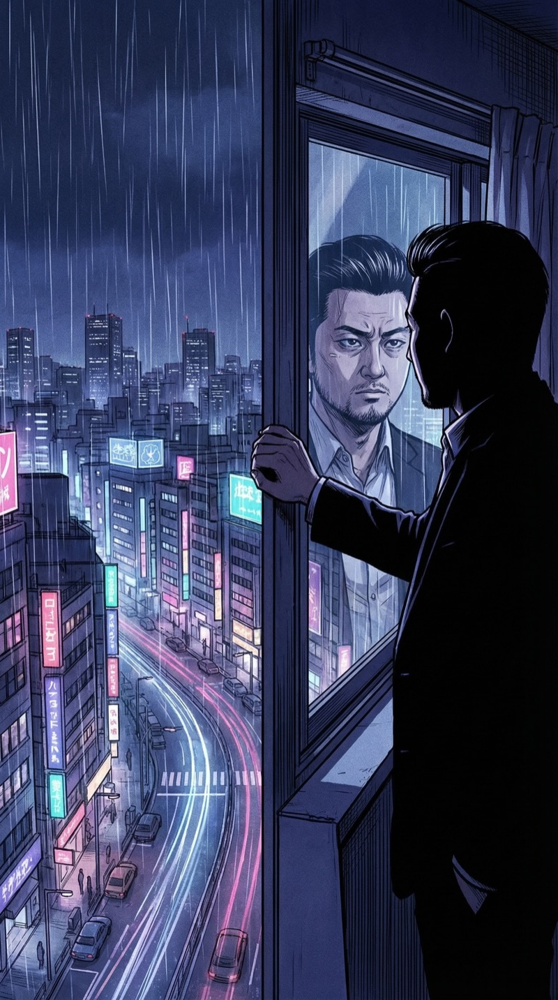
我关上电脑，走到窗前。
2014年的夜空，能看到比2026年多得多的星星。
这到底是巧合，还是……
上辈子的结局，根本不是我以为的那样？
如果陆远不是唯一的重生者——如果那个"消失的人"也是——
那这场游戏的规则，比我想象的复杂得多。
窗外有辆夜班公交开过去，灯光扫过我的脸。
我攥紧拳头。
"没关系。"
你早来一个月又怎样。你有"消失的人"当股东又怎样。
上辈子你死了，我也死了。这辈子，我要改写结局。
所有人的结局。
下一章预告
第三章 ·「消失的人」
T O B E C O N T I N U E D